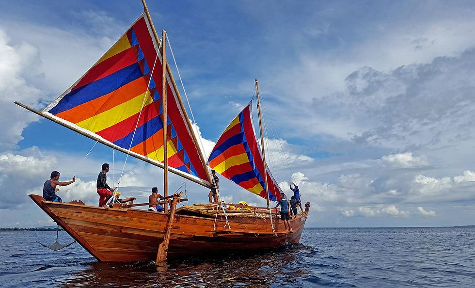
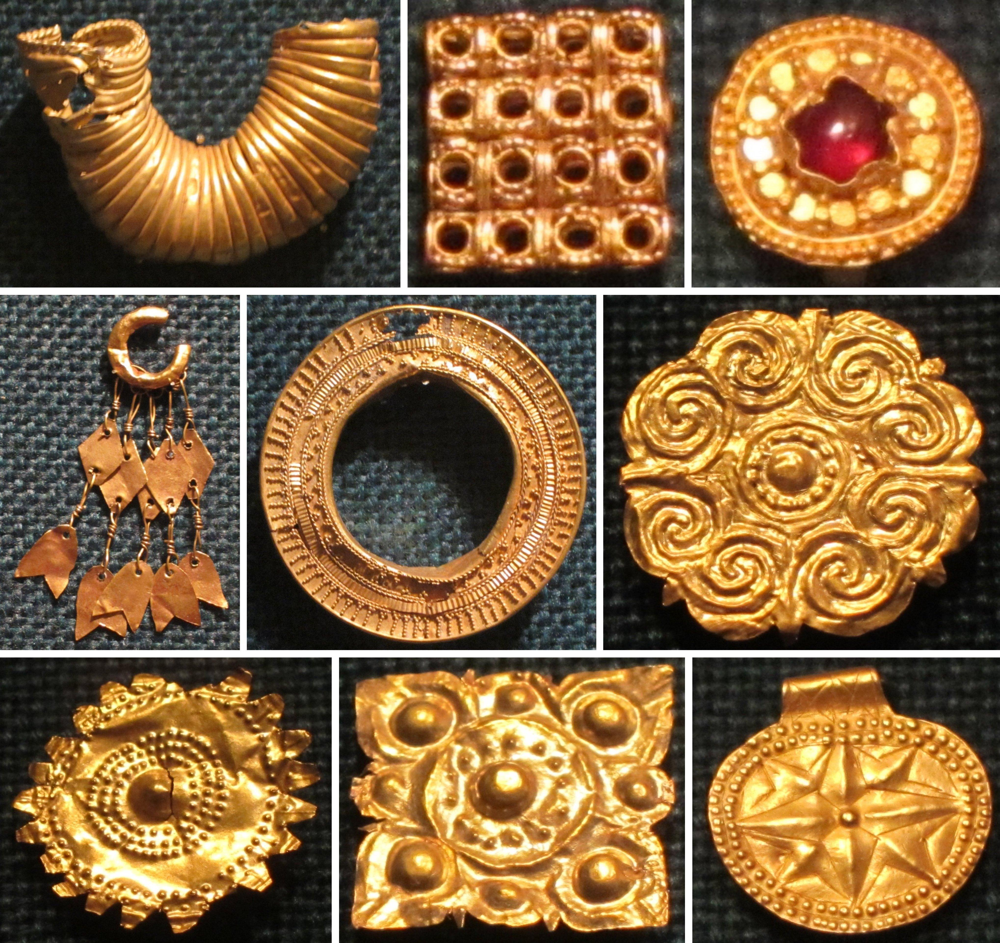

Pre-Colonial (Before 1521)



Before the arrival of foreign colonizers, the Philippines already had established communities, cultures, and traditions.
-
Important Facts:
- Communities were organized into barangays.
- Each barangay was usually led by a Datu.
- Filipinos practiced trading with neighboring Asian countries.
- They had their own writing system called Baybayin.
- People practiced different religions and indigenous beliefs.